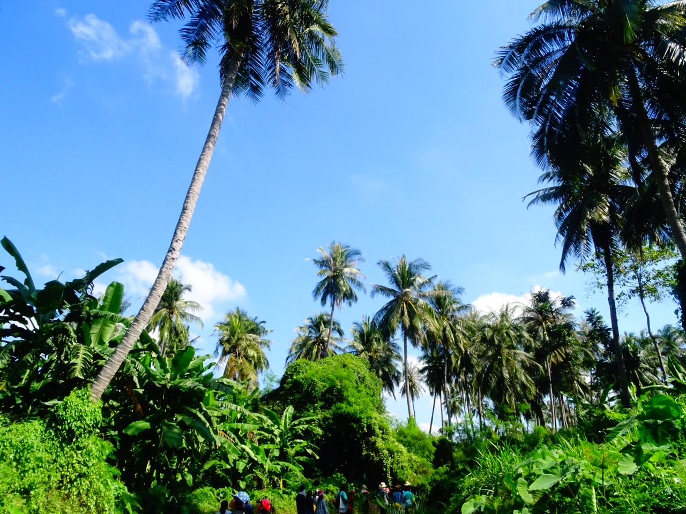
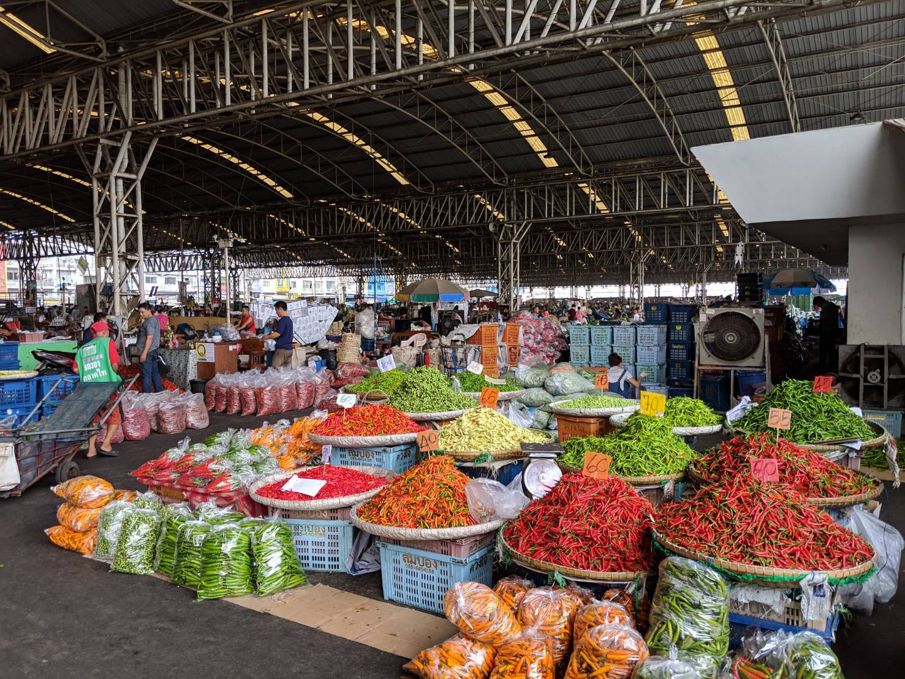

Gallery
Nature

OLYMPUS E-M5 Mark-Ⅱ with M.ZUIKO DIGITAL 12 – 50 mm @ Blue sky caught at the Manao Bay, Prachuap Khiri Khan, Thailand
This page is under construction.
Culture

OLYMPUS E-M5 Mark-Ⅱ with M.ZUIKO DIGITAL 12 – 50 mm @ Various types of chillies sold in wholesaler market, Pathum Thani, Thailand
This page is under construction.